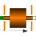

TranslatoryArmatureAndStopperMass with free travel between two stoppers |

|
Diagram
{kind=link}
Information
This information is part of the Modelica Standard Library maintained by the Modelica Association.
In translatory actuators with limited stroke, the armature with its inertia can travel between two stoppers.
Parameters (7)
| L |
Value: Type: Length (m) Description: Length of component from left flange to right flange (= flange_b.s - flange_a.s) |
|---|---|
| m |
Value: Type: Mass (kg) Description: Armature mass |
| c |
Value: Type: TranslationalSpringConstant (N/m) Description: Spring stiffness between impact partners |
| d |
Value: Type: TranslationalDampingConstant (N·s/m) Description: Damping coefficient between impact partners |
| n |
Value: 2 Type: Real Description: Exponent of spring forces (f_c = c*|s_rel|^n) |
| x_max |
Value: Type: Position (m) Description: Position of stopper at maximum armature position |
| x_min |
Value: Type: Position (m) Description: Position of stopper at minimum armature position |
Connectors (2)
Components (5)
Used in Components (4)
|
Modelica.Magnetic.FluxTubes.Examples.MovingCoilActuator.Components
Detailed actuator model for rough magnetic design of actuator and system simulation |
|
|
Modelica.Magnetic.FluxTubes.Examples.MovingCoilActuator.Components
Simple behavioural actuator model for system simulation |
|
|
Modelica.Magnetic.FluxTubes.Examples.SolenoidActuator.Components
Simple network model of a lifting magnet with planar armature end face |
|
|
Modelica.Magnetic.FluxTubes.Examples.SolenoidActuator.Components
Advanced network model of a lifting magnet with planar armature end face, split magnetomotive force |